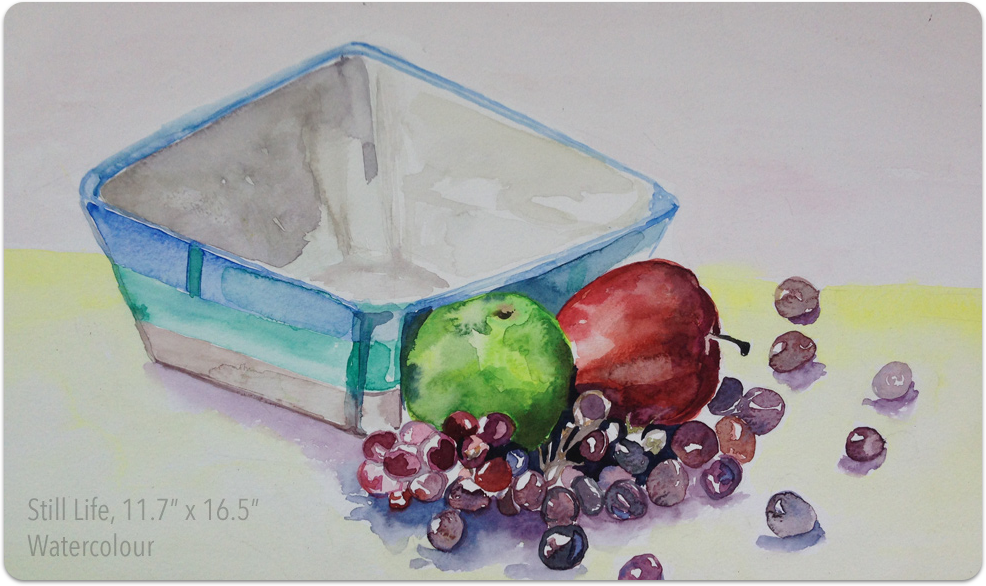

Art being imbibed in me from a very young age resulted in me pursuing the passion by joining art classes at the tender age of 7. I went on display many of my finest artworks in multiple art galleries right from school. Watercolour is one of my favourite art mediums. My paintings varies from a abstract to stillife.
